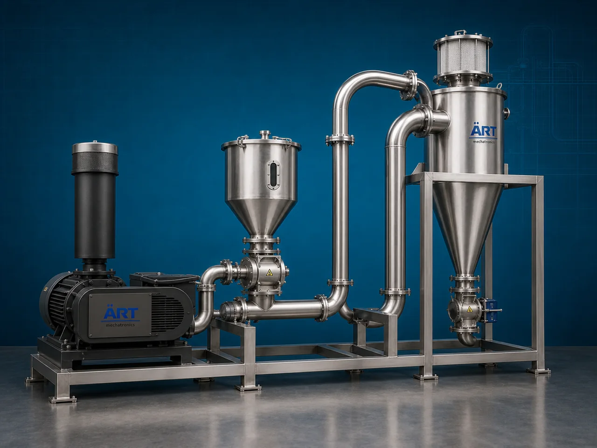

Pneumatic Conveyor Machine (Industrial Pneumatic Bulk Material Conveying System)
A Pneumatic Conveyor Machine, also known as a Pneumatic Conveying System or Industrial Air Conveying System, is an advanced industrial material handling equipment designed for transporting powders, granules, pellets, grains, flour, cement, chemicals, spices, food ingredients, and bulk materials through enclosed pipelines using air pressure or vacuum technology.

About the Pneumatic Conveyor
Pneumatic conveying systems are widely used for:
- Dust-free bulk material conveying
- Long-distance material transportation
- Hygienic material handling
- Automated factory material transfer
- Multi-point feeding systems
- Enclosed powder conveying
The machine improves:
- Production automation
- Material handling efficiency
- Workplace cleanliness
- Product safety and hygiene
- Labor reduction
- Space optimization
Unlike mechanical conveyors, pneumatic conveyors use:
- High-pressure air systems
- Vacuum conveying technology
- Pipeline conveying networks
- Blowers and airlocks
to move materials rapidly and efficiently through enclosed pipelines.
Pneumatic conveyor machines are widely used in industries such as:
Food processing industries
Pharmaceutical industries
Chemical industries
Cement industries
Flour mills
Plastic industries
Power plants
Grain processing plants
where clean, enclosed, contamination-free, and automated bulk material conveying is essential.
The machine is highly suitable for:
- Powder conveying
- Flour transfer
- Spice handling
- Cement conveying
- Granule transportation
- Bulk ingredient feeding
ART Mechatronics offers high-performance pneumatic conveyor machines, engineered for continuous industrial operation, enclosed hygienic conveying, energy-efficient transfer, and reliable long-term performance.
Working Principle of Pneumatic Conveyor Machine
Powders, granules, grains, or bulk materials are fed into pneumatic conveying line through hopper or rotary airlock valve
Blower, vacuum pump, or compressor generates airflow inside conveying pipeline
Material gets suspended and transported inside air stream
Machine conveys:
- Powders
- Flour
- Cement
- Spices
- Pellets
- Granules
- Food ingredients through sealed pipeline systems.
Pneumatic system can transfer materials: Horizontally Vertically Around bends Across long distances
Cyclone separator or filter receiver separates material from conveying air at discharge point
Material discharged into: Storage silos Mixers Packaging machines Processing equipment
Types of Pneumatic Conveyor Machines
- 1. Vacuum Pneumatic Conveyor
Uses: ✔ Negative pressure vacuum system for hygienic and dust-free conveying.
- 2. Pressure Pneumatic Conveyor
Uses: ✔ Positive pressure airflow system for long-distance conveying applications.
- 3. Dilute Phase Pneumatic Conveyor
Suitable for: ✔ High-speed low-density material conveying systems
- 4. Dense Phase Pneumatic Conveyor
Designed for: ✔ Fragile and abrasive material handling applications
- 5. Food Grade Pneumatic Conveyor
Suitable for: ✔ Hygienic food and pharmaceutical industries
- 6. Centralized Pneumatic Conveying System
Designed for: ✔ Multi-machine automated material transfer plants
Industries Using Pneumatic Conveyor Machine
🍃 Food Processing Industry Flour, spice, and ingredient conveying systems 💊 Pharmaceutical Industry Hygienic powder handling systems ⚗️ Chemical Industry Chemical powder and granule conveying systems 🏗️ Cement Industry Cement and fly ash transfer systems 🌾 Flour Mill Industry Flour and grain conveying systems 🧴 Plastic Industry Plastic pellet conveying systems ⚡ Power Plant Industry Fly ash handling systems 🌾 Grain Processing Industry Grain and seed pneumatic transfer systems
Features & Advantages
- Fully enclosed dust-free conveying system
- Hygienic and contamination-free material transfer
- Suitable for long-distance conveying
- Reduces manual handling and labor costs
- Continuous industrial operation
- Flexible pipeline routing capability
- Energy-efficient material handling solution
- Low maintenance and easy operation
- Easy integration with industrial automation systems
Technical Highlights
Conveying Type: Vacuum conveying Pressure conveying Dense phase conveying Dilute phase conveying Construction: Stainless Steel / Mild Steel Conveyor Components: Blower Vacuum pump Rotary airlock valve Cyclone separator Dust collector Conveying Arrangement: Horizontal Vertical Multi-directional routing Automation: Semi-automatic Fully automatic PLC-based systems
Turnkey Pneumatic Conveying Solutions
ART Mechatronics offers: Complete pneumatic conveying systems Centralized bulk material handling solutions Powder transfer automation systems Silo and packaging line integration Installation & commissioning After-sales service & AMC
Why Choose Art Mechatronics
Expertise in industrial bulk material handling systems Customized pneumatic conveying solutions for multiple industries High-performance and durable industrial construction Energy-efficient and reliable conveying systems Proven industrial performance across sectors
Applications
Food Processing Plants Pharmaceutical Manufacturing Units Chemical Industries Cement Plants Flour Mills Grain Processing Industries
Industries that use the Pneumatic Conveyor
Related Conveying & Handling machines
Get pricing & specs for the Pneumatic Conveyor
Share the product, target capacity, current process and plant location. These details help our engineers discuss the right machine or line configuration.
One partner, from design to start-up
ART Mechatronics designs, manufactures, installs and commissions your Pneumatic Conveyor solution with regional presence in India, UAE and Thailand.